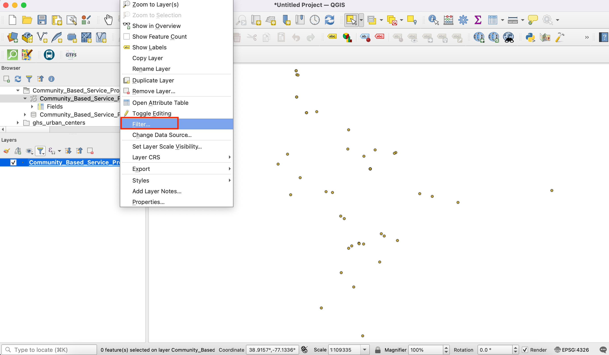
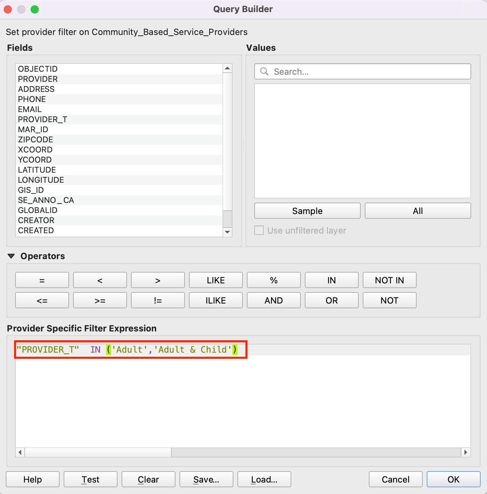
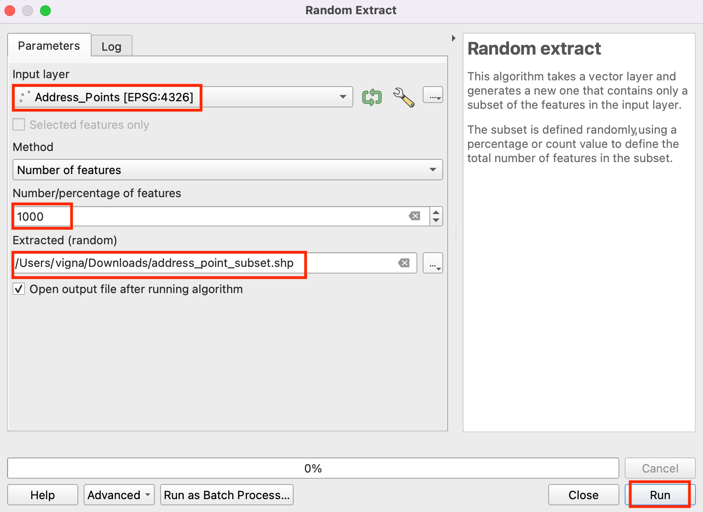
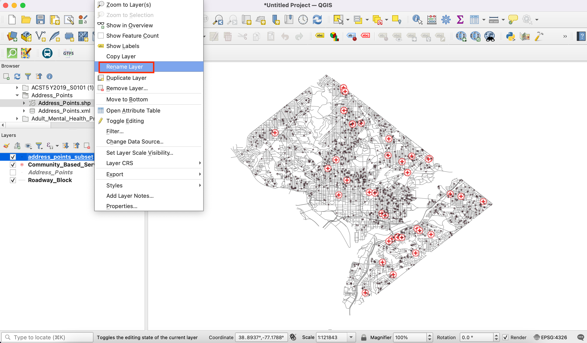
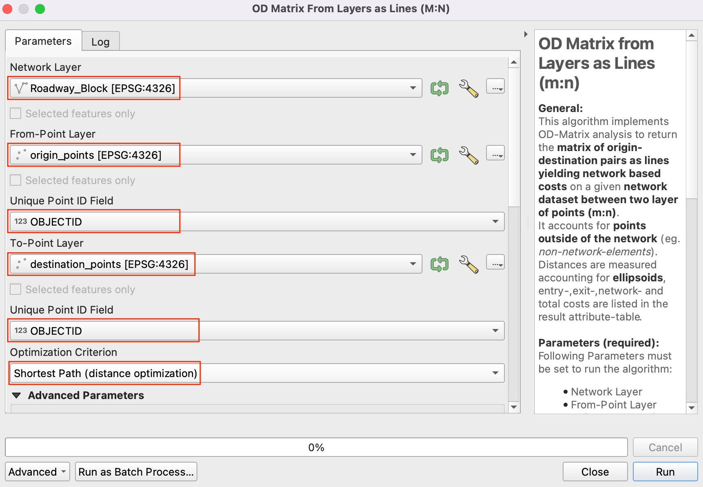
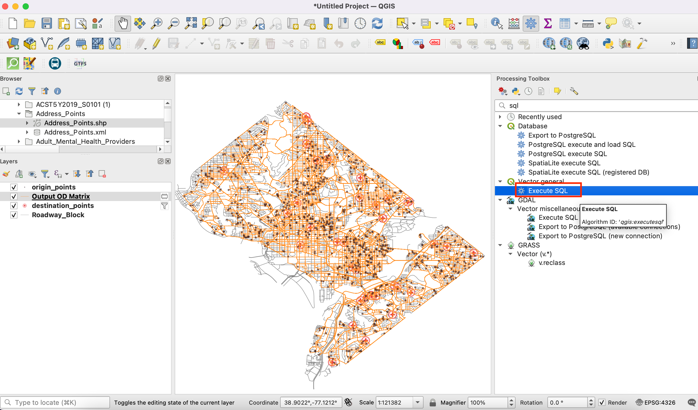
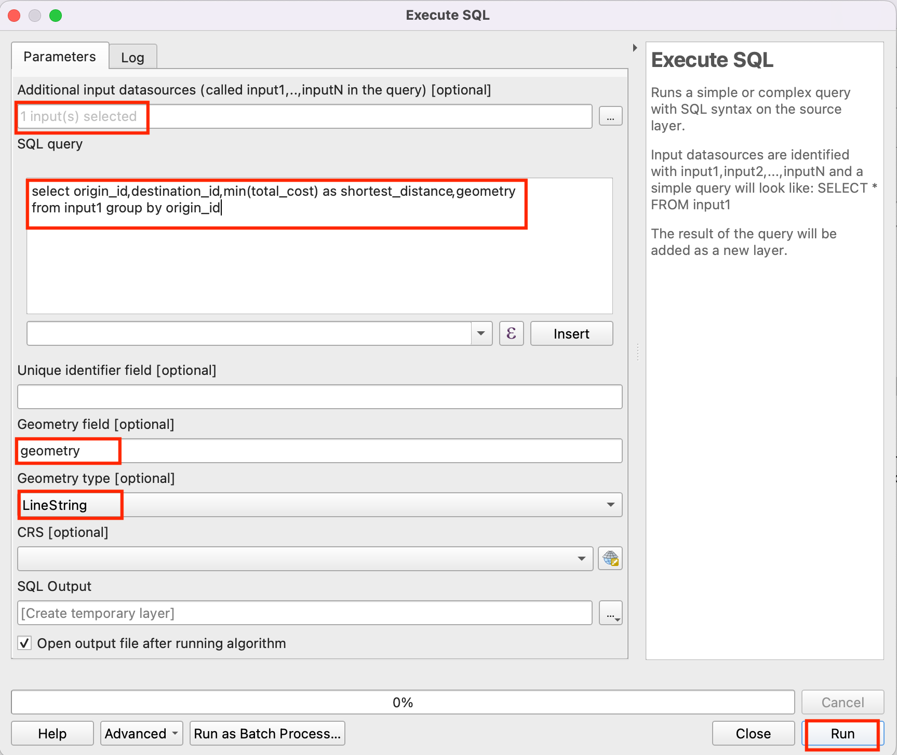
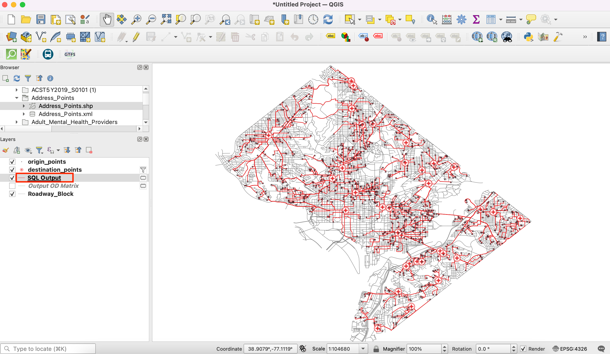

Ujaval Gandhi
Ujaval GandhiLociranje najbližeg objekta pomoću matrice porekla i odredišta (QGIS3)¶
U prethodnom tutorijalu, Osnovna vizuelizacija i rutiranje mreže (QGIS3), naučili smo kako da napravimo mrežu i izračunamo najkraći put između 2 tačke. Tu tehniku možemo primeniti na mnoge različite vrste analize zasnovane na mrežama. Jedna takva primena je izračunavanje Matrice porekla-odredišta ili OD matrice. S obzirom na skup tačaka porekla i drugi skup tačaka odredišta, možemo izračunati najkraći put između svakog para porekla-odredišta i saznati udaljenost/vreme putovanja između njih. Takva analiza je korisna za lociranje najbliže ustanove bilo kojoj datoj tački. Na primer, logistička kompanija može koristiti ovu analizu da pronađe najbliže skladište svojim kupcima kako bi optimizovala rute isporuke. Ovde koristimo algoritam Matrica udaljenosti iz dodatka QGIS Network Analysis Toolbox (QNEAT3) da bismo pronašli najbližu zdravstvenu ustanovu svakoj adresi u gradu.
Белешка
Ovaj tutorijal pokazuje kako da koristite sopstvene mrežne podatke za izračunavanje matrice porekla i odredišta. Ako nemate sopstvene mrežne podatke, možete koristiti ORS Tools Plugin i algoritam da biste uradili sličnu analizu koristeći OpenStreetMap podatke. Pogledajte Analiza područja usluge korišćenjem Openrouteservice (QGIS3) da biste saznali kako da koristite ORS Tools plugin.
Pregled zadataka¶
Uzećemo 2 sloja za Vašington - jedan sa tačkama koje predstavljaju adrese i drugi sa tačkama koje predstavljaju ustanove za mentalno zdravlje - i pronaći ustanovu sa najmanjom udaljenošću putovanja od svake adrese.
Druge veštine koje ćete naučiti¶
Izvucite slučajni uzorak iz tačkastog sloja.
Koristite virtuelne slojeve za pokretanje SQL upita na QGIS sloju.
Dobijte podatke¶
Vlada Distrikta Kolumbija slobodno deli stotine skupova podataka na „Katalogu otvorenih podataka <https://opendata.dc.gov/>`_.
Preuzmite sledeće slojeve podataka kao shapefile-ove.
Radi lakšeg snalaženja, možete direktno preuzeti kopiju skupova podataka sa donjih linkova:
Community Based Service Provider.zip
Izvor podataka: [DCOPENDATA]
Podešavanje¶
Posetite . Izaberite :guilabel:` Sve`. Potražite QNEAT3 dodatak i instalirajte ga. Kliknite na Zatvori.

Procedura¶
Pronađite datoteku „Community_Based_Service_Providers.zip“, proširite je i dodajte „Community_Based_Service_Providers.shp“ na platno. Izabraćemo samo one centre koji pružaju usluge odraslima. Kliknite desnim tasterom miša na sloj „Community_Based_Service_Providers.shp“ i izaberite :guilabel:„Filter“.

Otvoriće se dijaloški prozor Query Builder. Unesite sledeći upit u :guilabel:` Filter Expression` Kliknite na Run.
"PROVIDER_T" IN ('Adult','Adult & Child')
Zatim, pronađite datoteku
Roadway_Block.zip, proširite je i dodajteRoadway_Block.shp. Slično tome, pronađite datotekuAddress_Points.zip, proširite je i dodajteAddress_Points.shp. Videćete mnogo tačaka širom grada. Svaka tačka predstavlja važeću adresu. Nasumično ćemo odabrati 1000 tačaka. Ova tehnika se naziva slučajno uzorkovanje. Idite na .

Potražite i pronađite algoritam .
Izaberite
Address_Pointskao Ulazni sloj,Broj obeležjakao Metod i unesite1000u Broj/procenat obeležja. U Izdvojeno (nasumično) izaberite...i kliknite na Sačuvaj u datoteku. Sada izaberite direktorijum i unesite ime kaoaddress_point_subset.shpi kliknite na Pokreni.

Белешка
Pošto će algoritam izvući 1000 slučajnih tačaka iz datog skupa podataka, da biste replicirali tačne tačke korišćene u ovoj vežbi, možete preuzeti datoteku podskupa koju smo dobili tokom izvršavanja algoritma ovde address_point_subset.zip . Nakon preuzimanja, učitajte sloj address_point_subset.shp u QGIS.
Novi sloj
address_point_subsetbiće dodat na panel Layers, možete isključiti vidljivost sloja adresnih tačakaAddress_Points. Hajde da preimenujemo ovaj sloj uorigin_points. Kliknite desnim tasterom miša na slojaddress_point_subseti izaberite Rename layer.

Slično tome, preimenujte slojeve „Community_Based_Service_Provider“ koji predstavljaju zdravstvene ustanove u „destination_points“. Imenovanje slojeva na ovaj način olakšava njihovu identifikaciju u kasnijoj obradi. Dalje ćemo otvoriti alate za obradu da bismo kreirali matricu udaljenosti koristeći slojeve porekla i odredišta.

Pronađite algoritam . Ako ne vidite ovaj algoritam u alatkama, uverite se da ste instalirali QNEAT3 dodatak.

Ovaj algoritam pomaže u pronalaženju rastojanja duž mreže između izabranih slojeva porekla i odredišta. Izaberite
Roadway_Blockkao Mrežni sloj. Izaberiteorigin_pointskao Sloj od tačaka iOBJECTIDkao Polje za jedinstveni ID tačke. Slično, podesitedestination_pointskao Sloj za tačke iOBJECTIDkao Polje za jedinstveni ID tačke. Postavite Kriterijum optimizacije kaoNajkraći put (optimizacija rastojanja).

Pošto su mnoge ulice u mreži jednosmerne, potrebno je da podesimo Napredne parametre da bismo odredili smer. Pogledajte Osnovna vizuelizacija i rutiranje mreže (QGIS3) za više detalja o tome kako su ovi atributi strukturirani. Takođe imamo opciju da izaberemo stil geometrije generisane matrice. Imamo putnu mrežu sa informacijama o smeru, tako da možemo da generišemo matricu prateći rutu. Izaberite
Geometrija matrice prati rute. IzaberiteSUMMARYDIRkao polje za smer. UnesiteOBkao Vrednost za smer napred,IBkao Vrednost za smer nazad iBDkao Vrednost za oba smera. Postavite Toleranciju topologije kao0.000150. Zadržite ostale opcije na njihovim podrazumevanim vrednostima i kliknite na Pokreni.

Novi sloj tabele pod nazivom „Izlazna OD matrica“ biće dodat u panel :guilabel:„Slojevi“. Kliknite desnim tasterom miša i izaberite :guilabel:„Otvori tabelu atributa“. Videćete da tabela sadrži 67000 redova. Imali smo 67 početnih tačaka i 1000 odredišnih tačaka - tako da izlaz sadrži 67x1000 = 67000 parova porekla i odredišta. Kolona „ukupni_troškovi“ sadrži rastojanje u metrima između svake početne tačke i svake odredišne tačke.

Za ovaj tutorijal, zanima nas samo odredišna tačka sa najkraćom udaljenošću. Možemo kreirati SQL upit da bismo izabrali odredište sa najmanjim „total_cost“ među svim odredištima. Idite na . Potražite i pronađite .

U Dodatni izvori ulaznih podataka izaberite
...i označite Izlazna matrica OD i kliknite na U redu. Sada kliknite na Sumariranje pod SQL upit. Unesite sledeći upit u SQL upit dijalog prozor. Unesitegeometrijakao polje Geometrija i izaberiteniska linijekao tip geometrije. Kliknite na Pokreni.
select origin_id, destination_id, min(total_cost) as shortest_distance, geometry from input1 group by origin_id
Novi virtuelni sloj „SQL Output“ biće dodat na panel Layers. Ovaj sloj sadrži rezultat naše analize. Najbliži dobavljač usluga za svaku od 1000 početnih tačaka.

If you want to give feedback or share your experience with this tutorial, please comment below. (requires GitHub account)